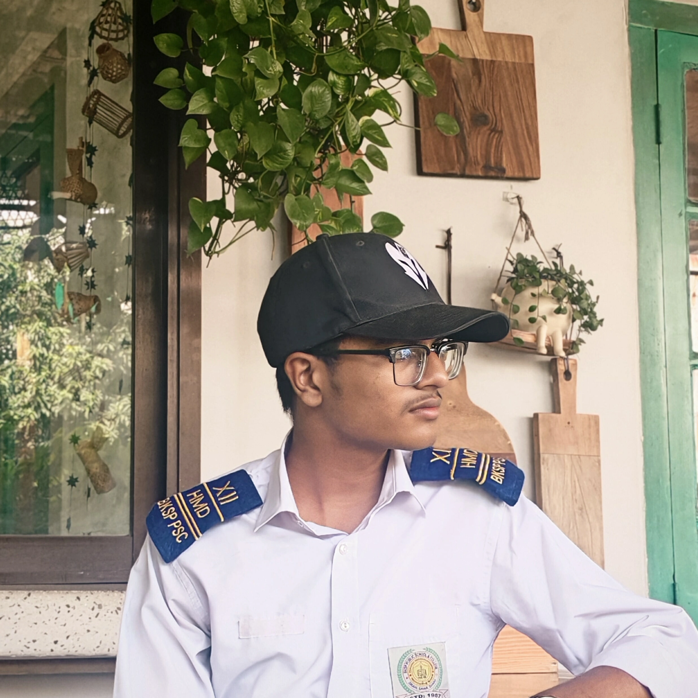

Welcome to My Portfolio

Mahadi Islam Alif — Web Developer & Entrepreneur
I'm a passionate web developer and entrepreneur from Bangladesh, driven by curiosity and a strong bias toward building real things from scratch.
Alongside my development work, I conduct independent research — with two published papers on Zenodo and engrXiv — and have authored books on dark psychology and elite performance. I currently maintain Gratis Pages, a free open book library I built and grew from zero.
I've also launched a business with just 3,000 BDT, documented every step honestly — including the failures — and kept moving forward.
This portfolio is a full record of that journey: the projects, the research, the certifications, the books, and everything in between. Feel free to explore.
AI-Assisted Manga Creation: A Workflow for Non-Artists
Traditional manga production requires years of artistic mastery, often barring storytellers from the medium. This research explores a five-stage production pipeline that combines Large Language Models (LLMs) for narrative with diffusion-based image synthesis for visuals.
To validate the workflow, I produced a five-page manga chapter from scratch using tools like ChatGPT and Midjourney without formal drawing training. The study demonstrates significantly reduced production times and confirms that AI can effectively democratize the medium for non-artists.
To download metadata click here
Spring-Powered V8 Engine Model: Mechanical Design, Energy Conversion, and Thermodynamic Analysis
This paper presents a theoretical mechanical design and analytical study of a hand-loaded, spring-powered V8 engine model. The proposed machine converts manually pre-stored elastic potential energy governed by Hooke's Law into sustained rotational mechanical output through a six-stage energy conversion pathway.
Analytical energy distribution estimates suggest approximately 40% useful mechanical output, accounting for bearing friction and aerodynamic losses. The study rigorously addresses energy conservation laws and rotational inertia to provide a technical framework for future STEM demonstrators.
DOI: 10.31224/6657

Craftly | Operations Engineer
I am currently working at Craftly — Bangladesh's first serious attempt to build a homegrown tech company that competes on the world stage with the likes of Google, Microsoft, and Apple.
The core of Craftly is Craftly Robot, an ultra-advanced AI chatbot being engineered to go far beyond what current assistants offer. It is designed to build full Android APKs directly from a mobile phone, generate training datasets, and eventually run on its own proprietary LLM — completely independent of third-party APIs or existing AI systems.
As of now, the project is in its training and data-collection phase, with the team actively crowdsourcing realistic dataset batches to teach Craftly Robot how to build apps. The platform and its AI have not yet launched publicly.
In my role as an Operations Engineer, I contribute to the day-to-day workflow of the project — helping coordinate the operational side of building, training, and scaling this ambitious system from the ground up.
View Signed AgreementAI & Digital Marketing
While my core focus is web development and entrepreneurship, my curiosity has recently led me to explore Artificial Intelligence and Digital Marketing. I do not work professionally in these sectors yet; I am gaining knowledge out of pure passion and to broaden my entrepreneurial toolkit.
From understanding AI tools to exploring digital marketing strategies, I am actively expanding my knowledge base. As proof of my ongoing education, feel free to check out my Certificates.
Poedagar 613 | E-Commerce Venture
In May 2025, I launched my first entrepreneurial venture, Poedagar 613, with just 3,000 BDT. It was a manual dropshipping operation where I collected items from Daraz and marketed them on Facebook. Although the business didn't generate sales, it provided invaluable lessons in sourcing, acquisition, and the mechanics of bootstrapped e-commerce.
📈 Key Learnings & Growth
- Market Validation: Understanding demand before inventory investment is crucial.
- Data Analysis: Learning to interpret ad metrics beyond just clicks.
- Resource Management: Maximizing impact with extremely limited capital.
- Resilience: Embracing challenges as learning opportunities rather than failures.

Watch from Amazon & Daraz

Raw pics of watches

Watch Presentation

Watch Boxes
Instagram Professional Account
I initiated this professional Instagram account with a strategic vision to raise awareness regarding wealth creation, victory, and the psychology of money. By leveraging high-impact movie clips, I aimed to provide a "cutter" to help individuals navigate and escape the systemic traps of a 9-5 society, focusing on business, entrepreneurship, and self-help. This project was designed not only as an educational platform but also as a tactical experiment in building passive income streams. It serves as a documented milestone in my journey toward achieving top-class billionaire status and financial independence in a traditional economic landscape.
Started: 16 Aug 2025